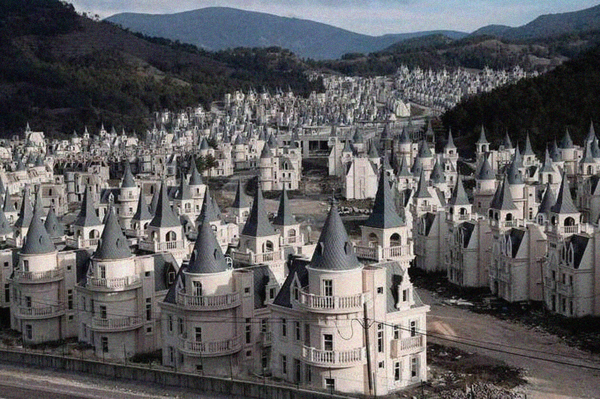

Postmodernisme et immobilisme à l'ère du réalisme capitaliste
Marie Frediani
Club ASAP 04
octobre 2024
Temps de lecture : 6 min
Et si le postmodernisme, ultime isme / isme ultime, marquait la fin d’une histoire de l’art condamnée par le capitalisme tardif ?
Courant architectural et culturel majeur qui émerge dans la seconde moitié XXème siècle, il marque une rupture significative avec les idéaux modernistes de transformation sociale et de progrès. À travers ses formes fragmentées, son éclectisme stylistique et son rejet des grands récits, il reflète un monde dominé par le capitalisme tardif, où l’architecture cesse d’être un vecteur d’utopie pour devenir une réponse pragmatique aux exigences du marché globalisé.
En se penchant sur les théories des penseurs contemporains Fredric Jameson, Mark Fisher, et Slavoj Žižek, on peut voir en ce mouvement la dernière phase d’un processus historique où l’architecture, autrefois porteuse d’un projet social et idéologique, devient un simple prolongement de la logique capitaliste.
Dans ce cas, l’architecture peut-elle redevenir capable d’ imaginer des futurs alternatifs ?
1 I Fredric Jameson : le postmodernisme comme logique du capitalisme tardif
Fredric Jameson, dans Postmodernism, or, The Cultural Logic of Late Capitalism (1991), développe l’idée que le postmodernisme est la “logique culturelle du capitalisme tardif”*. Dans son essai Future City (2023) il discute notamment du travail de l'architecte Rem Koolhaas. Il soutient que contrairement au modernisme, qui visait à mettre en œuvre des utopies sociales et des formes rationnelles, une harmonie fonctionnelle, le postmodernisme architectural est caractérisé par la fragmentation, le pastiche, le spectacle et l’absence de profondeur historique.
* Fredric Jameson, "Postmodernism, or, The Cultural Logic of Late Capitalism", Durham, Duke University Press, 1991
Il fait valoir que l'architecture postmoderniste n'a plus de projet de transformation sociale ou de vision du futur. Les grands récits modernistes, qui voyaient dans l’architecture un moyen de changer la société, se sont dissous dans un univers où les bâtiments ne sont plus que des répliques de styles passés ou des réponses fonctionnelles aux impératifs du marché. Les centres commerciaux, gratte-ciels et complexes de bureaux deviennent des espaces sans âme, nés de la mondialisation capitaliste.
Il évoque d’ailleurs l'essai de Koolhaas intitulé Junkspace (2011), qui dresse un portrait pessimiste de la société postmoderne et des espaces commerciaux proliférants et dysfonctionnels du capitalisme globalisé. Jameson accuse cependant la production de l’architecte lui-même d’être moins critique, « Koolhaas ne critique pas directement le capitalisme, mais l'intègre dans ses créations architecturales, capturant ainsi les contradictions du monde urbain contemporain »*
* Fredric Jameson, “Future City”, New Left Review, Londres, vol. 21, 2003
Le postmodernisme est ainsi perçu comme le dernier courant, car il ne s’oppose pas au capitalisme, mais en épouse pleinement les logiques. L'architecture devient une marchandise, une simple adaptation à un monde où la production de l’espace est soumise aux exigences du marché global. Pour Jameson, il n’y a plus d’alternative idéologique ni d’ambition de construire un autre futur à travers l'architecture.
2 I Mark Fisher : réalisme capitaliste et paralysie de l’imaginaire
Mark Fisher, dans Capitalist Realism (2009), reprend et élargit l'analyse de Jameson en expliquant que la culture contemporaine, plus généralement, est dominée par une incapacité à imaginer un futur au-delà du capitalisme. Ce phénomène est au cœur de ce qu’il appelle le réalisme capitaliste. Il décrit l’idée que le capitalisme est devenu l'unique système économique et social envisageable, au point que tout autre modèle est perçu comme irréalisable.
« La fin du monde est plus facile à imaginer que la fin du capitalisme »
Mark Fisher, "Capitalist Realism: Is There No Alternative?", Londres, Zero Books, 2009. Mark Fisher octroie la paternité de cette citation (traduite en français en 2018) à Slavoj Žižek paraphrasant lui-même Fredric Jameson
Dans le cadre du réalisme capitaliste, les espaces bâtis sont souvent orientés vers la consommation et l'efficacité économique. Les grands complexes commerciaux, parfois des villes dédiées au tourisme de masse (comme Dubaï), sont des espaces conçus pour maximiser la consommation, reflétant l'omniprésence du capitalisme dans tous les aspects de la vie quotidienne. Le réalisme capitaliste se manifeste également dans la manière dont les villes sont organisées. La privatisation de l'espace public, la gentrification, et l’expansion des zones résidentielles fermées (gated communities) en sont des symptômes. Ces processus limitent l'accès à certaines zones en fonction des revenus, créant des espaces fragmentés qui renforcent les inégalités sociales et économiques. L’espace public laisse souvent place par des espaces semi-publics comme les centres commerciaux ou les parkings privés, conçus pour faciliter la consommation plutôt que les interactions sociales non marchandes. La construction en masse de bâtiments optimisés pour les coûts, souvent sans attention particulière à l'originalité ou à la qualité esthétique, reflète cette approche. L’architecture n’est plus porteuse de sens ou de visions collectives, elle se limite à reproduire le présent sans projeter de rupture ou de transformation future.
Les non-lieux tels que les aéroports, les supermarchés ou les autoroutes sont décrits par l’ethnologue Marc Augé comme des “espaces interchangeables et dépourvus d’identité”*. Ils sont omniprésents dans le capitalisme tardif et peuvent être analysés sous le prisme du réalisme capitaliste, car ils reflètent la déshumanisation et la perte de sens dans l'architecture contemporaine. Elle devient alors un simple outil de fonction, sans dimension émotionnelle ou culturelle.
* Marc Augé, "Non-lieux ; introduction à une anthropologie de la surmodernité", Paris, Seuil, 1992
3 I Slavoj Žižek : l’architecture comme idéologie
Slavoj Žižek, bien qu’il n’ait pas développé une véritable théorie de l’architecture, utilise fréquemment cette dernière comme une métaphore pour illustrer le fonctionnement de l’idéologie capitaliste. Pour Žižek, les structures architecturales contemporaines, notamment les gratte-ciels et les espaces commerciaux massifs, sont des symboles matériels de la domination du capitalisme globalisé. Pour lui, ces bâtiments, souvent imposants et déconnectés du tissu social local, sont des fétiches du pouvoir économique. Le postmodernisme est selon lui une forme d’acquiescement aux logiques du capital, une architecture qui ne remet pas en question, mais renforce la domination du marché.
« Comme cela a souvent été remarqué, on peut dire que le postmodernisme représente la dérégulation de l’architecture – un historicisme radical où, dans un pastiche mondialisé, tout est possible, tout est permis. Le pastiche fonctionne comme une “parodie vide” : un historicisme radical où tout le passé est mis sur un pied d’égalité dans une synchronicité du présent éternel. »
Slavoj Žižek dans sa conférence “Architectural Parallax”, Lacanian Ink 33 Event, New York, 2009. Traduite de l’anglais par moi-même.
Il pointe également les contradictions inhérentes à l'architecture contemporaine, qui prétend souvent être progressive ou "durable", tout en servant les intérêts des multinationales et des élites économiques. Par exemple, des projets d'urbanisme "verts" ou "intelligents" sont parfois des moyens de dissimuler les véritables impacts écologiques et sociaux des projets capitalistes. Les alternatives architecturales qui proposent des structures plus écologiques, collaboratives ou solidaires sont souvent marginalisées ou non réalisées à grande échelle. Dans ce cadre, l’architecture postmoderniste devient la dernière manifestation d’une société dont l’avenir semble bloqué. Postmodernisme rime alors avec immobilisme.
4 I Mark Fisher : l’hantologie ou le fantôme des futurs non réalisés comme espoir/h2>
Fisher décrit l’hantologie* comme une situation où le présent est hanté par les promesses non réalisées du passé. Ce concept s’applique directement à l'architecture postmoderniste, hantée par les projets utopiques non accomplis du modernisme. Les ruines du modernisme et de l’époque moderne, telles que les grands ensembles sociaux abandonnés ou les bâtiments industriels désaffectés, sont les symboles concrets de ces futurs non réalisés. L’architecture postmoderniste semble ignorer ces échecs tout en perpétuant l’absence de toute ambition alternative. Ainsi, l’architecture contemporaine est marquée par une stagnation temporelle, elle est le fantôme d’un futur qui n’arrive jamais.
* Mark Fisher, Ghosts of My Life: Writings on Depression, Hauntology and Lost Futures, Londres, Zero Books, 2014
La notion de simulacre*, chez Jean Baudrillard, peut aussi s'interconnecter avec l'hantologie pour appréhender cette architecture contemporaine. Les reproductions architecturales ou les villes "fantômes" recrééesartificiellement, comme certaines parties de Las Vegas ou les répliques de villes européennes en Chine, sont des exemples de lieux hantés par une idée du passé, tout en étant des simulacres du réel.
* Jean Baudrillard, "Simulacres et Simulation", Paris, Galilée, 1981

Fisher décrit l’hantologie* comme une situation où le présent est hanté par les promesses non réalisées du passé. Ce concept s’applique directement à l'architecture postmoderniste, hantée par les projets utopiques non accomplis du modernisme. Les ruines du modernisme et de l’époque moderne, telles que les grands ensembles sociaux abandonnés ou les bâtiments industriels désaffectés, sont les symboles concrets de ces futurs non réalisés. L’architecture postmoderniste semble ignorer ces échecs tout en perpétuant l’absence de toute ambition alternative. Ainsi, l’architecture contemporaine est marquée par une stagnation temporelle, elle est le fantôme d’un futur qui n’arrive jamais.
* Mark Fisher, Ghosts of My Life: Writings on Depression, Hauntology and Lost Futures, Londres, Zero Books, 2014
La notion de simulacre*, chez Jean Baudrillard, peut aussi s'interconnecter avec l'hantologie pour appréhender cette architecture contemporaine. Les reproductions architecturales ou les villes "fantômes" recrééesartificiellement, comme certaines parties de Las Vegas ou les répliques de villes européennes en Chine, sont des exemples de lieux hantés par une idée du passé, tout en étant des simulacres du réel.
* Jean Baudrillard, "Simulacres et Simulation", Paris, Galilée, 1981
Cependant, l’hantologie pourrait aussi revêtir une fonction salvatrice comme le souligne Fisher dans The Metaphysics of Crackle: Afrofuturism and Hauntology (2013). Elle est de rappeler que ces futurs alternatifs existent toujours en puissance, au-delà des limites de la postmodernité, même s'ils n’ont pas encore été actualisés. Elle nous pousse à chercher dans les échecs et les débris du passé, les vestiges d'une autre façon de penser l’avenir, une façon que le capitalisme tardif a étouffée mais qui demeure présente, comme un spectre.
« Une fonction de l’hantologie est de continuer à insister sur le fait qu’il existe des futurs au-delà de la ligne terminale de la post-modernité. Quand le présent a abandonné le futur, nous devons écouter les reliques de ce dernier dans les potentiels non activés du passé. »
Mark Fisher, “The Metaphysics of Crackle : Afrofuturism and Hauntology”, Dancecult, Londres, vol.5, no.2, 2013
Cette approche est une forme de résistance contre l’idée que le présent - avec ses crises sociales, économiques et écologiques - est la seule possibilité. En écoutant ces fantômes, il devient possible de ressusciter des alternatives oubliées, et ainsi réinventer des futurs qui échappent à la fatalité du capitalisme globalisé. L’afrofuturisme, mentionné dans ce texte de Fisher, est un exemple de cette hantologie, où des récits historiques souvent occultés (comme ceux des diasporas africaines) sont réactivés pour imaginer des futurs radicalement différents. De la même manière, d’autres potentialités marginalisées, qui n'ont pas été réalisées à leur époque, pourraient offrir une alternative aux impasses de la postmodernité actuelle.
L'ensemble des articles issus du club asap 04 sont disponibles ci-dessous:
| # | Titre | Auteur | |
|---|---|---|---|
| 400 | L'exemple post-moderne | ASAP | Club #04 |
| 401 | Postmodernisme et immobilisme à l'ère du réalisme capitaliste | Marie Frediani | Club #04 |
| 402 | Architecture X Accélérationnisme : au-delà de la fin des -Ismes | Louis Fiolleau | Club #04 |
| 403 | La crise de la neutralité - en finir avec la post-politique | Salma Bensalem | Club #04 |
| 404 | Un Isme est une stratégie gagnante | Hugo Forté | Club #04 |
| 405 | A l'ère des spectres et des nuances | Morgane Ravoajanahary | Club #04 |